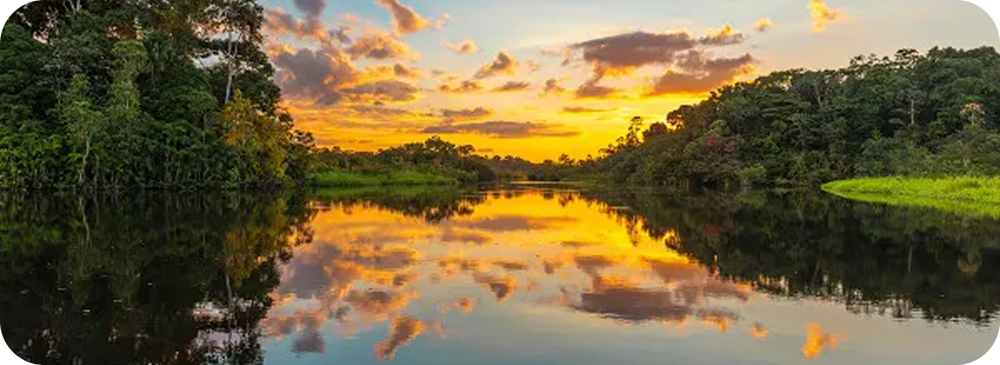
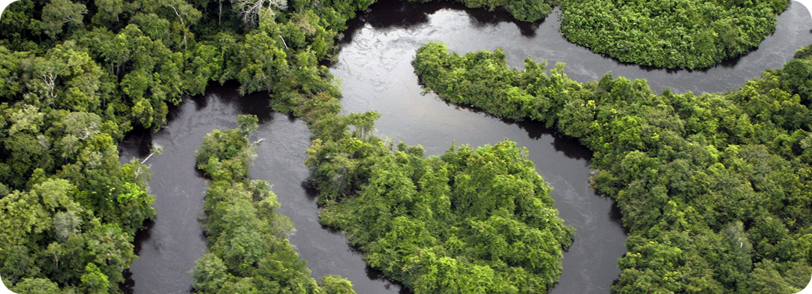

Amazônia em
reflorestamento

A Amazônia em reflorestamento renasce, recuperando biodiversidade e lutando contra a mudança climática.
Esperança verde!
Amazônia finalmente entra em estado de reflorestamento
O governo brasileiro, em parceria com organizações ambientais, instituições de pesquisa e comunidades indígenas, intensificou os esforços de reflorestamento na Amazônia, com o objetivo de recuperar áreas degradadas, combater as mudanças climáticas e preservar a biodiversidade. A nova fase do projeto, iniciada neste mês, já plantou mais de 5 milhões de mudas nativas em regiões críticas do bioma amazônico, priorizando áreas com altos índices de desmatamento e baixa capacidade de regeneração natural.
Segundo o Ministério do Meio Ambiente, o plano prevê o reflorestamento de 12 mil hectares até o final de 2025, o equivalente a mais de 11 mil campos de futebol. A iniciativa integra ações de curto, médio e longo prazo, e envolve o uso de tecnologias inovadoras, como drones para o mapeamento de áreas desmatadas e análise de solo, além da aplicação aérea de sementes utilizando técnicas de plantio direto, que aceleram significativamente a regeneração da floresta em áreas de difícil acesso.
“A recuperação da Amazônia é uma prioridade nacional e global. Estamos unindo ciência, saber tradicional e políticas públicas para garantir um futuro mais sustentável”, afirmou a ministra do Meio Ambiente, Marina Ramos. Ela também destacou que o programa está alinhado aos compromissos internacionais assumidos pelo Brasil no Acordo de Paris e na Convenção sobre Diversidade Biológica.
O programa conta com a participação ativa de comunidades locais, que além de receberem capacitação técnica, também são remuneradas pelo trabalho de coleta de sementes, preparo do solo, plantio e monitoramento das áreas reflorestadas. Essa abordagem gera emprego, renda e incentiva a permanência das populações tradicionais em seus territórios, fortalecendo a economia local e promovendo o desenvolvimento sustentável da região. A atuação dessas comunidades tem sido apontada como fundamental para o sucesso da iniciativa, já que o conhecimento tradicional desempenha um papel essencial na escolha das espécies e na condução do processo de reflorestamento.
Organizações internacionais, como a ONU, o Banco Mundial e o Fundo Global para o Meio Ambiente (GEF), também estão apoiando financeiramente o projeto, destacando o papel estratégico do Brasil na liderança ambiental global. Os recursos internacionais são aplicados tanto na execução direta das ações como no fortalecimento institucional de órgãos ambientais. Especialistas afirmam que, embora o reflorestamento não substitua a necessidade urgente de combater o desmatamento ilegal e garantir a proteção de áreas preservadas, ele representa um passo essencial para restaurar a biodiversidade, proteger os serviços ecossistêmicos da floresta — como a regulação do clima e o ciclo da água — e mitigar os efeitos das mudanças climáticas em escala regional e global. Além disso, a iniciativa serve como modelo para outras nações que enfrentam desafios semelhantes em seus biomas nativos.